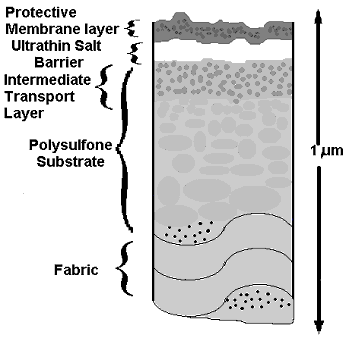
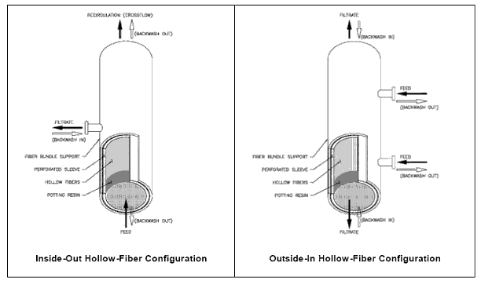
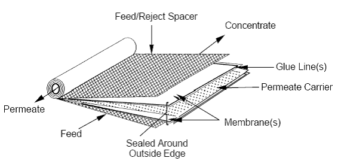
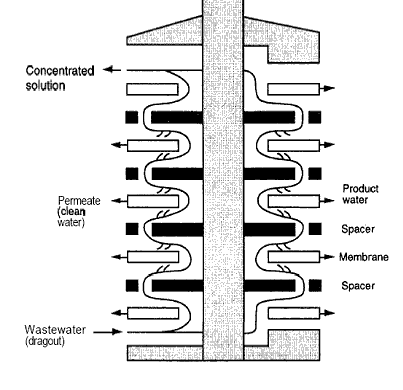
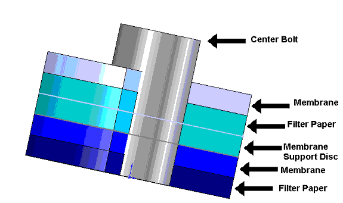
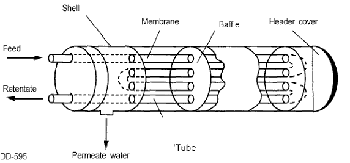

Membrane
|
Cellulose Acetate membranes are the most widely used medium-pressure membranes. They are not usable in the alkaline range in which hydrolysis is accelerated. They are easily attacked by bacteria and susceptible to biodegradation, but they are resistant to oxidizing agents and can withstand 0.5-mg/L chlorine solution. Cellulose acetate membranes must operate within a pH range of 4-8 and a temperature of 40º C. Polyamide membranes can be used under a wide range of pH conditions, from 2-11, and are not subject to biodegradation. They operate at a temperature of 65º C. Polyamide membranes do have a limited tolerance for strong oxidants, but they are compatible with weak oxidants such as chloramines. These membranes require significantly less pressure to operate than cellulose membranes. The operating conditions for
polyamide and cellulose acetate are
presented in Table 3. |
Table 3. Generic RO Membrane Continuous Operation Parameters
|
|
|
|
|
|
|
Polymer Type |
Max Temp. (C) |
Max Pressure (psig) |
Optimum pH Range |
Max Free Chlorine Continuous |
|
Cellulose Acetate (CA) |
40 |
1000 |
2 – 8 |
2 ppm |
|
Polyamide (PA) |
65 |
1000 |
2 – 11 |
None |
|
Operating Issues: Operation
of RO systems is subject to periodic fluctuations and
problems, including: · Fouling, also know as pore plugging, can happen to any membrane. It happens when solute particles block the membrane, thereby slowing the passage of solvent or stopping the flow altogether. · Adsorption fouling is the physical and chemical sorption of organic and inorganic compounds to the membrane surface. This also significantly reduces throughput. · Concentration polarization occurs when a layer of high-concentration solute is formed at the membrane surface, reducing the overall solvent permeability. · Gel-Layers form when the concentration of macromolecular solutes and colloidal species at the membrane surface rise to the point where a gelatinous layer is produced.
RO membranes are only about 100µm thick and
operate at pressures between 5-70 kg/cm2. To support large-scale throughput, the
membranes are mounted to support structures or substrates as depicted
in Figure
9. RO modules commonly used today
include hollow-fiber, spiral round, plate and flame and tubular
assemblies. These are described below. |

Figure 9. Reverse
Osmosis
Composite Membrane
Hollow-Fiber These modules are made up of
hollow-fiber
membranes, which consist of long and very narrow tubes (Figure
10). There are several different ways in which
these fibers may be bundled. A common
configuration has the fibers bundled together longitudinally, potted
with resin
on each end and encased in a pressure vessel.
Typically, these modules are mounted vertically, although they may be
mounted horizontally. Other alternative
configurations also exist. A commercially
available hollow-fiber module may consist of several hundred to as many
as
10,000 fibers. Typical dimensions of a
fiber may consist of 50-200µm in outer diameter, 30-100µm
in inside diameter,
10-60µm in wall thickness, and 1-2 meters in fiber length. |
|
Hollow-Fiber
modules can operate in either an “inside-out” or
“outside-in” mode. For the inside-out mode, the feed
water
enters the fiber’s lumen
and filters radially through the fiber wall. The filtrate is
collected from the outside
of the fiber. The inside-out mode
utilizes a well-defined feed flow path that is advantageous when
operating
under a cross-flow configuration.
Unfortunately, the membrane is more subject to obstruction due to the
potential for the lumen to become clogged. When a hollow-fiber
module is
operated in an inside-out mode, the pressurized feed water may enter
the fiber
lumen at one or both ends of the module, with the filtrate exiting in
the
center or the ends.
In the outside-in mode, the feed water passes from outside the fiber through the fiber wall and the filtrate is collected in the lumen. The outside-in mode uses a less defined flow path, but it increases the available surface area for filtration per fiber and avoids potential clogging of the lumen bore. In the outside-in mode, the feed water generally enters the module in the center and is filtered into the fiber lumen where the filtrate collects before exiting at the ends. Most hollow-fiber systems operate in “dead-end” or direct filtration mode and are periodically backwashed to remove the accumulated solids. The two hollow-fiber module designs are depicted in Figure 11. |

Figure 11. Inside-out and
Outside-in Modes of Operation (EPA, 2005)
. 
Figure 12. Spiral Wound Module (EPA, 2005)
|
Plate and Frame
In this arrangement, depicted in Figures 13 and 14, circular flat films, spacers for liquid passage and porous supports are alternated to form a pressed filter element from which permeating water and concentrate is taken. The chief merit of this type is easy disassembly for cleaning the membrane. |

Figure 13.
Illustration of a Plate and Frame Module (EPA, 2005 )

Figure 14.
Plate and Frame Filter Structure
|
Tubular
In tubular
modules, the packing
density is generally low and the diameter of the membrane is typically
between
5 and 15 mm. Modules are classified
into two systems: internal pressure and external pressure (Figure 15). •Internal Pressure A tubular film is applied over the inner wall of a
porous pipe
(generally a ½ inch in diameter). The
raw water is directed into the pipe.
The water permeating through the porous pipe is collected
outside. The porous pipe serves as a pressure vessel,
so the pressure resistance is not required for the outer jacket for
collecting
permeating flow. •External Pressure The outer surface of a porous pipe is lined with a
membrane. The raw water is directed outside the pipe,
and the permeating water is collected inside the pipe. A pressure
vessel housing the entire
assembly is required. The advantage is
that it can be disassembled for cleaning the membrane surface. |

Figure 15. Tubular Module (EPA, 2005)
|
The relative costs, designs, space, energy, and resistance to fouling are compared in Tables 4 and 5. The exact amount is dependent on many different variables, including the size and specific model of each module being used. |
Table 4. RO Module Cost Comparisons
|
|
|
|
|
|
|
|
Module |
System Cost |
Design Flexibility |
Required System Space |
Energy Use |
Susceptibility to Fouling |
|
Plate and Frame |
$$$ |
$$ |
$$$ |
$$$ |
$$ |
|
Hollow - Fiber |
$ |
$$$ |
$ |
$$ |
$$$$ |
|
Spiral Wound |
$ |
$$$$ |
$$ |
$ |
$$$ |
|
Tubular |
$$$ |
$ |
$$$$ |
$$$$ |
$ |
Table 5. RO Module Performance Comparison
|
|
|
|
|
|
|
|
Design |
|||
|
Characteristic |
Spiral Wound |
Hollow – Fibers |
Tubular |
Plate and Frame |
|
Cost |
Low |
Low |
High |
High |
|
Packing Density |
High |
Very High |
Low |
Moderate |
|
Pressure Capability |
High |
High |
Medium |
High |
|
Membrane Polymer Choice |
Many |
Few |
Few |
Many |
|
Fouling Resistance |
Fair |
Poor |
Very Good |
Fair |
|
Clean Ability |
Good |
Poor |
Very Good |
Good |